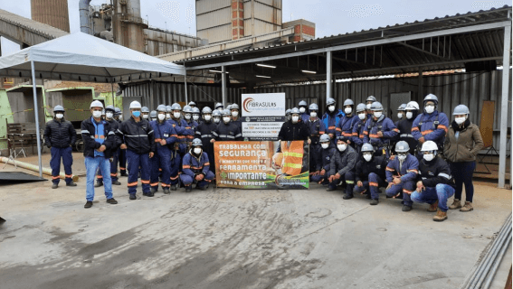
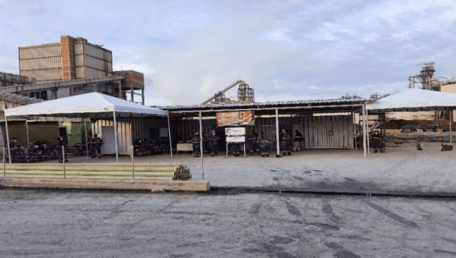

A equipe
A FIBRASULRS Manutenção Industrial Eireli dispõe de uma equipe de profissionais altamente qualificada para a realização dos trabalhos propostos. Nosso diferencial é a qualidade aliada a custos competitivos onde, desta forma, possibilitam a tranquilidade de nossos clientes e a certeza de um trabalho que atenda suas expectativas.
